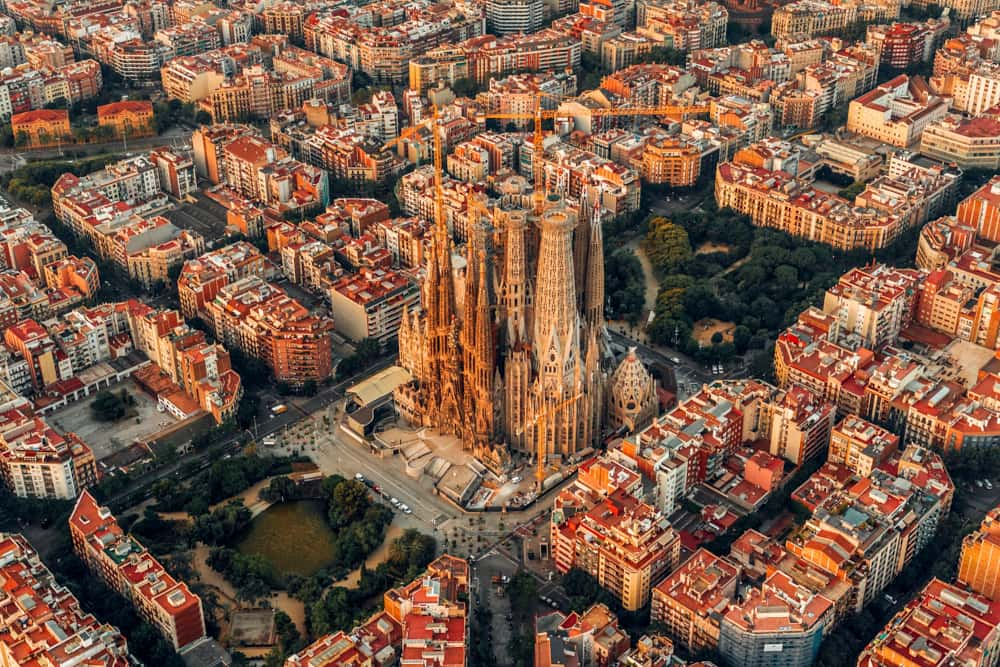

1. Barcelona

A vibrant coastal city famous for its Gothic and Modernist architecture by Antoni Gaudí, rich cultural scene, and incredible cuisine.
- Province/State: Catalonia
- Country: Spain
- Population: ~1,630,000 inhabitants
- Latitude & Longitude: 41.3879° N, 2.1699° E
- Flag: